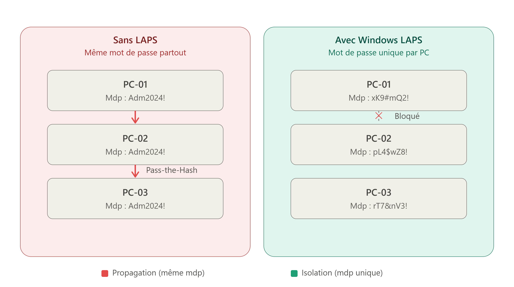

Windows LAPS : un mot de passe différent pour chaque ordinateur
1. Pourquoi garder un compte administrateur local
D'abord, une question importante. Pourquoi garder un compte administrateur local sur chaque ordinateur ? Ce compte existe pour des cas particuliers.
- Le réseau peut tomber en panne : Sans réseau, l'ordinateur ne peut pas parler au contrôleur de domaine. Le compte administrateur local, lui, fonctionne toujours. Il ne dépend pas du réseau.
- Un ordinateur neuf n'est pas encore dans le domaine : Au début, il n'a aucun compte du domaine. Seul le compte administrateur local existe. C'est ce compte qui sert à faire les premiers réglages.
- Le contrôleur de domaine peut tomber en panne : Si tous les contrôleurs de domaine sont en panne, personne ne peut se connecter avec un compte du domaine. Le compte local, lui, marche quand même.
- Un pirate peut prendre le contrôle du domaine : Dans ce cas très grave, on ne peut plus faire confiance aux comptes du domaine. Le compte local sert de dernier recours.
- Pour des petites tâches rapides : Un technicien peut réparer une machine avec le compte local, sans utiliser un compte
Domain Admin. C'est plus sûr : si ce mot de passe est volé, il ne donne accès qu'à une seule machine.
Donc, ce compte est utile. Mais il crée aussi un gros problème. On va le voir maintenant.
2. Le problème : le même mot de passe partout
Beaucoup d'entreprises font une erreur simple. Elles mettent le même mot de passe sur le compte administrateur local de toutes les machines.
Voici pourquoi c'est très dangereux. Un pirate attaque une seule machine. Il vole le mot de passe local. Ce mot de passe est le même partout. Le pirate peut alors se connecter à toutes les autres machines avec ce mot de passe. Cette attaque a un nom : Pass-the-Hash. Elle est déjà expliquée dans l'article sur les groupes privilégiés d'Active Directory.
Il faut donc une solution. Cette solution doit faire deux choses :
- Donner un mot de passe différent à chaque machine.
- Changer ce mot de passe automatiquement, de temps en temps.
C'est exactement ce que fait Windows LAPS.
3. C'est quoi Windows LAPS ?
Windows LAPS est un outil de Microsoft. Il est gratuit. Il a un seul but : donner un mot de passe unique au compte administrateur local de chaque machine.
Voici comment il fonctionne, en mots simples :
- Chaque ordinateur a un mot de passe différent pour son compte administrateur local.
- Ce mot de passe est fort (majuscules, minuscules, chiffres, caractères spéciaux).
- Ce mot de passe change automatiquement, tout seul, à intervalles réguliers.
- Ce mot de passe est stocké dans Active Directory (ou dans Azure Active Directory, selon les besoins).
Windows LAPS ne s'installe pas sur les contrôleurs de domaine. Il s'installe sur les postes de travail et les serveurs normaux.

4. Windows LAPS remplace LAPS Legacy
Avant Windows LAPS, il existait un ancien outil : LAPS Legacy (aussi appelé Microsoft LAPS). Windows LAPS est le nouveau produit qui le remplace.
Windows LAPS n'est pas juste une mise à jour de LAPS Legacy. C'est un produit complètement différent. Il a ses propres paramètres de GPO. Il a ses propres attributs dans le schéma Active Directory. Les deux outils peuvent même vivre en même temps sur le même réseau, sans problème.
Voici les nouveautés principales de Windows LAPS, comparées à LAPS Legacy :
- a) Il est intégré à Windows : Avec LAPS Legacy, il fallait installer un petit programme (un "agent") sur chaque machine. Avec Windows LAPS, ce n'est plus nécessaire. L'agent est déjà dans le système Windows. Il suffit juste d'installer une mise à jour.
- b) Le mot de passe est chiffré : Avec LAPS Legacy, le mot de passe était stocké en clair dans Active Directory — n'importe qui avec les droits de lecture pouvait le voir directement. Avec Windows LAPS, le mot de passe est chiffré. C'est une amélioration importante pour la sécurité.
- c) On peut choisir où stocker le mot de passe : Avec LAPS Legacy, il n'y avait qu'un seul endroit : Active Directory. Avec Windows LAPS, on peut choisir : Active Directory, ou Azure Active Directory.
- d) On garde un historique des mots de passe : Windows LAPS peut garder en mémoire les anciens mots de passe. Par exemple, il peut garder les 5 derniers mots de passe. C'est très utile en cas de problème pendant un changement de mot de passe.
- e) Il peut aussi gérer le mot de passe DSRM : C'est le mot de passe de restauration des services d'annuaire, sur les contrôleurs de domaine. Windows LAPS peut aussi faire tourner ce mot de passe automatiquement. C'est un sujet un peu différent, pour un autre article.
- f) Un nouvel onglet dans la console Active Directory : Cet onglet s'appelle "LAPS". On y voit le nom du compte géré, le mot de passe, et sa date d'expiration.
- g) Un nouveau module PowerShell : Il est complètement séparé de celui de LAPS Legacy. Il a de nouvelles commandes.
- h) Un nouveau fichier ADMX : C'est le fichier qui donne accès aux paramètres de GPO de Windows LAPS.
- i) Un nouveau journal d'événements : Ce journal s'appelle "LAPS". On le trouve dans l'Observateur d'événements, sur chaque machine.
5. Quels systèmes sont compatibles ?
Windows LAPS ne marche pas sur toutes les versions de Windows. Voici la liste :
Côté postes de travail :
- Windows 10 (versions Pro, Éducation, Entreprise)
- Windows 11 (versions 21H2, 22H2, en Pro, Éducation, Entreprise)
Côté serveurs :
- Windows Server 2019
- Windows Server 2022 (y compris en mode "Core", sans interface graphique)
Attention : Avoir la bonne version de Windows ne suffit pas. Il faut aussi installer une mise à jour minimum (mise à jour d'avril 2023). Sans cette mise à jour, Windows LAPS n'apparaît pas sur la machine, même s'il est déjà "intégré" au système.
6. Les prérequis avant de commencer
Avant d'installer Windows LAPS, il faut vérifier plusieurs choses :
- Les systèmes doivent être compatibles. Voir la liste juste au-dessus.
- Toutes les machines doivent être à jour. Au minimum, la mise à jour d'avril 2023.
- Tous les contrôleurs de domaine doivent être mis à jour en premier, avant de faire la mise à niveau du schéma Active Directory. C'est une étape très importante.
- Active Directory doit être bien sauvegardé. On va modifier le schéma. C'est une opération sensible. Il faut donc toujours avoir une sauvegarde avant de commencer.
7. Étape 1 : préparer Active Directory
Cette étape se fait sur un contrôleur de domaine, avec un compte du groupe Schema Admins (rappel : ce groupe doit normalement rester vide en dehors de ce genre d'opération, comme expliqué dans l'article sur les groupes privilégiés).
D'abord, on vérifie que le module PowerShell de Windows LAPS est bien disponible :
Import-Module LAPS
Get-Command -Module LAPSEnsuite, on met à jour le schéma Active Directory. Cette commande ajoute les nouveaux attributs nécessaires à Windows LAPS :
Update-LapsADSchemaAprès cette commande, de nouveaux attributs apparaissent dans Active Directory. On peut les voir dans l'éditeur d'attributs d'un objet ordinateur (il faut d'abord activer l'affichage des "fonctionnalités avancées" dans la console) :
- Le mot de passe chiffré du compte administrateur local de la machine.
- L'historique des mots de passe précédents.
- La date de la prochaine expiration du mot de passe.
- Deux attributs liés au mot de passe DSRM (pour les contrôleurs de domaine uniquement).
Un nouvel onglet "LAPS" apparaît aussi dans les propriétés de chaque ordinateur, dans la console Active Directory Users and Computers.
8. Étape 2 : donner le droit aux ordinateurs d'écrire leur mot de passe
Chaque ordinateur doit avoir le droit d'écrire son propre mot de passe dans Active Directory. Par défaut, ce droit n'existe pas. Il faut le donner, pour une OU précise (une unité d'organisation qui contient les ordinateurs concernés) :
Set-LapsADComputerSelfPermission -Identity "OU=PC,DC=xyz,DC=com"Conseil pratique : pour éviter les erreurs de frappe, il vaut mieux copier le "Distinguished Name" exact de l'OU depuis ses propriétés (onglet "Éditeur d'attributs", attribut distinguishedName), plutôt que de le taper à la main.
9. Étape 3 : configurer Windows LAPS par GPO
D'abord, il faut installer les modèles d'administration de Windows LAPS. Ces modèles sont deux fichiers :
LAPS.admx(à mettre dans le magasin central des GPO, dansPolicyDefinitions)LAPS.adml(à mettre dans le sous-dossier de langue, par exemplefr-FR)
Une fois ces fichiers en place, une nouvelle section apparaît dans l'édition des GPO, sous : Configuration ordinateur > Modèles d'administration > Système > LAPS.
Voici les paramètres principaux à configurer :
- a) Configurer le répertoire de sauvegarde du mot de passe : On l'active. On choisit où stocker le mot de passe : Active Directory (ou Azure Active Directory).
- b) Paramètres du mot de passe : On l'active. On choisit une politique forte : majuscules, minuscules, chiffres, caractères spéciaux. On peut choisir une longueur de 16 caractères. On choisit aussi la fréquence de renouvellement automatique, par exemple tous les 30 jours.
- c) Configurer la taille de l'historique des mots de passe chiffrés : On l'active. On choisit une valeur entre 0 et 12. La valeur 0 veut dire "pas d'historique". La valeur 1 veut dire "on garde seulement le mot de passe précédent". C'est utile en cas de problème pendant un changement de mot de passe.
- d) Activer le chiffrement du mot de passe : Ce paramètre est actif par défaut, même sans configuration explicite. Mais il vaut mieux l'activer soi-même, pour être sûr.
- e) Nom du compte administrateur à gérer : Si le compte s'appelle "Administrateur" (le nom par défaut), il n'y a rien à faire. Si le compte a un nom personnalisé (par exemple "ADM-PC"), il faut écrire ce nom ici.
Une fois la GPO configurée, il faut la lier à l'OU qui contient les ordinateurs. Il faut aussi penser à retirer le lien avec l'ancienne GPO de LAPS Legacy, si elle existe, pour que Windows LAPS prenne bien le relais.
10. Étape 4 : voir Windows LAPS en action
Une fois la GPO appliquée sur les machines (avec gpupdate /force, puis un redémarrage), Windows LAPS commence à fonctionner tout seul.
On peut vérifier plusieurs choses côté Active Directory :
- Dans l'onglet "LAPS" d'un ordinateur, on voit le nom du compte géré et son mot de passe chiffré. On peut cliquer pour l'afficher en clair (si on a les droits nécessaires).
- Avec PowerShell, on peut aussi récupérer le mot de passe directement :
Get-LapsADPassword -Identity "NOM-DU-PC" -AsPlainTextCôté machine cliente, un journal spécial existe. Il s'appelle "LAPS". On le trouve dans l'Observateur d'événements, dans Journaux des applications et des services > Microsoft > Windows > LAPS > Operational. Ce journal montre chaque changement de mot de passe fait par Windows LAPS.
On peut aussi forcer un changement de mot de passe immédiat, sans attendre la date normale d'expiration, avec cette commande PowerShell sur la machine cliente :
Invoke-LapsPolicyProcessing11. Étape 5 : qui a le droit de lire et de déchiffrer les mots de passe ?
C'est une étape très importante pour la sécurité. Il faut bien comprendre une distinction : lire un mot de passe n'est pas la même chose que déchiffrer un mot de passe.
Par défaut, seuls les membres du groupe Domain Admins peuvent lire et déchiffrer les mots de passe gérés par Windows LAPS.
Si on veut donner ce droit à un autre groupe (par exemple, une équipe support qui n'est pas Domain Admin), il faut faire deux choses :
a) Donner le droit de réinitialiser le mot de passe (première étape, avec PowerShell) :
Set-LapsADResetPasswordPermission -Identity "OU=PC,DC=xyz,DC=com" -AllowedPrincipals "MONDOMAINE\GDL-LAPS-PWD-READ"b) Donner le droit de déchiffrer le mot de passe (deuxième étape, obligatoire, par GPO) : Sans cette deuxième étape, le groupe ne pourra toujours rien lire. Il faut aller dans le paramètre GPO "Configurer les déchiffreurs de mot de passe autorisés", l'activer, et écrire le nom du groupe (avec le préfixe du domaine) ou son SID.
Attention : Ce paramètre de GPO ne remplace pas les autorisations existantes, il les définit entièrement. Si on met seulement le nouveau groupe, et qu'on oublie Domain Admins, alors même les administrateurs du domaine ne pourront plus déchiffrer les mots de passe. La solution : créer un groupe "chapeau", qui contient à la fois Domain Admins et les autres groupes autorisés, et mettre seulement ce groupe "chapeau" dans le paramètre GPO.
12. Suivre le déploiement dans le temps
Sur un grand parc de machines, il est difficile de savoir, machine par machine, si Windows LAPS fonctionne bien. Certaines machines ont peut-être encore LAPS Legacy. D'autres n'ont peut-être aucun des deux.
Un script PowerShell existe pour ça (créé par Loïc Verdier, disponible sur Github). Ce script génère un rapport, sous forme de fichier HTML. Ce rapport montre, pour chaque machine :
- Le nom de la machine
- Le système d'exploitation
- Si Windows LAPS est actif ou non
- Si LAPS Legacy est actif ou non
Ce rapport permet de repérer rapidement les machines oubliées — par exemple, une machine qui n'est pas dans la bonne OU, et qui n'a donc reçu ni la GPO, ni les autorisations nécessaires.
13. Le lien avec les groupes privilégiés
Windows LAPS n'est pas un sujet isolé. Il répond directement à un risque déjà détaillé dans l'article sur les groupes privilégiés d'Active Directory : le vol d'un hachage de mot de passe en mémoire (LSASS), suivi d'une attaque Pass-the-Hash.
Sans Windows LAPS, un même mot de passe administrateur local, copié sur toutes les machines, transforme la compromission d'un seul poste en compromission potentielle de tout le parc. Avec Windows LAPS, chaque mot de passe est unique et change régulièrement : voler le mot de passe d'une machine ne donne accès qu'à cette seule machine, et seulement pour un temps limité, jusqu'au prochain renouvellement automatique.
Conclusion
Windows LAPS répond à un problème simple, mais très répandu : le même mot de passe administrateur local, partagé sur toutes les machines d'un parc. Ce problème parait petit. Mais il donne à un attaquant un moyen très rapide de se déplacer d'une machine à l'autre.
Avec Windows LAPS, chaque machine a son propre mot de passe. Ce mot de passe change tout seul. Il est stocké de façon chiffrée. Et surtout, on peut contrôler précisément qui a le droit de le lire et de le déchiffrer. C'est une protection simple à mettre en place, pour un gain de sécurité important.